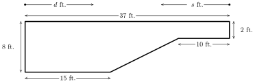

Funções Polinomiais e Racionais
8 Função Afim
Resumo do capítulo
A função afim $f(x) = mx + b$ é o primeiro exemplo de função polinomial estudado em detalhe: o capítulo trata do coeficiente angular como taxa de variação constante, das formas ponto-inclinação e reduzida da equação de uma reta, das condições de paralelismo e perpendicularismo entre retas, e de aplicações que envolvem modelos lineares.
Nos exercícios 1 - 10, encontre a equação da reta que passa pelo ponto dado e com a inclinação dada.
- $y+1 = 3(x-3)$
$y = 3x-10$ - $m = -2, \;\; P(-5, 8)$resposta$y-8 = -2(x+5)$
$y = -2x-2$
- $m = -1, \;\; P(-7, -1)$resposta$y + 1 = -(x+7)$
$y = -x-8$ - $m = \frac{2}{3}, \;\; P(-2, 1)$resposta$y - 1 = \frac{2}{3} (x+2)$
$y = \frac{2}{3} x + \frac{7}{3}$
- $m = -\frac{1}{5}, \;\; P(10, 4)$resposta$y - 4 = -\frac{1}{5} (x-10)$
$y = -\frac{1}{5} x + 6$ - $m = \frac{1}{7}, \;\; P(-1, 4)$resposta$y - 4 = \frac{1}{7}(x + 1)$
$y = \frac{1}{7}x + \frac{29}{7}$
- $m = 0, \;\; P(3, 117)$resposta$y - 117 = 0$
$y = 117$ - $m = -\sqrt{2}, \;\; P(0, -3)$resposta$y + 3 = -\sqrt{2}(x - 0)$
$y = -\sqrt{2}x - 3$
- $m = -5, \;\; P(\sqrt{3}, 2\sqrt{3})$resposta$y - 2\sqrt{3} = -5(x - \sqrt{3})$
$y = -5x + 7\sqrt{3}$ - $y + 12 = 678(x + 1)$
$y = 678x + 666$
Nos exercícios 11 - 20, encontre a equação da reta que passa pelos dois pontos dados.
- $y = -\frac{5}{3}x$
- $P(-1, -2), \; Q(3, -2)$resposta$y = -2$
- $P(5, 0), \; Q(0, -8)$resposta$y = \frac{8}{5}x - 8$
- $P(3, -5), \; Q(7, 4)$resposta$y = \frac{9}{4}x - \frac{47}{4}$
- $P(-1,5), \; Q(7, 5)$resposta$y = 5$
- $P(4, -8), \; Q(5, -8)$resposta$y = -8$
- $P\left(\frac{1}{2}, \frac{3}{4} \right), \; Q\left(\frac{5}{2}, -\frac{7}{4} \right)$resposta$y = -\frac{5}{4} x + \frac{11}{8}$
- $P\left(\frac{2}{3}, \frac{7}{2} \right), \; Q\left(-\frac{1}{3}, \frac{3}{2} \right)$resposta$y = 2x + \frac{13}{6}$
- $P\left(\sqrt{2}, -\sqrt{2} \right), \; Q\left(-\sqrt{2}, \sqrt{2} \right)$resposta$y = -x$
- $y = \frac{\sqrt{3}}{3} x$
Nos exercícios 21 - 26, esboce o gráfico da função. Encontre a inclinação, a interseção com o eixo $y$ e a interseção com o eixo $x$, caso existam.
$f(x) =2x-1$
inclinação: $m = 2$
interseção com o eixo $y$: $(0,-1)$
interseção com o eixo $x$: $\left(\frac{1}{2}, 0 \right)$
- $f(x) = 3 - x$resposta
$f(x) =3-x$
inclinação: $m = -1$
interseção com o eixo $y$: $(0,3)$
interseção com o eixo $x$: $(3, 0)$
- $f(x) = 3$resposta
$f(x) = 3$
inclinação: $m =0$
interseção com o eixo $y$: $(0,3)$
interseção com o eixo $x$: nenhuma
- $f(x) = 0$resposta
$f(x) = 0$
inclinação: $m =0$
interseção com o eixo $y$: $(0,0)$
interseção com o eixo $x$: $\{ (x,0) \, | \, \text{$x$ é um número real} \}$
- $f(x) = \frac{2}{3} x + \frac{1}{3}$resposta
$f(x) = \frac{2}{3} x + \frac{1}{3}$
inclinação: $m = \frac{2}{3}$
interseção com o eixo $y$: $\left(0, \frac{1}{3}\right)$
interseção com o eixo $x$: $\left(-\frac{1}{2}, 0\right)$
$f(x) = \dfrac{1-x}{2}$
inclinação: $m = -\frac{1}{2}$
interseção com o eixo $y$: $\left(0, \frac{1}{2}\right)$
interseção com o eixo $x$: $\left(1, 0\right)$
- Encontre todos os pontos da reta $y=2x+1$ que estão a $4$ unidades do ponto $(-1,3)$.resposta$(-1,-1)$ e $\left(\frac{11}{5}, \frac{27}{5}\right)$
- João pode caminhar confortavelmente a $3$ milhas por hora. Encontre a função afim $d$ que representa a distância total que João pode caminhar em $t$ horas, assumindo que ele não fez nenhuma parada.resposta$d(t) = 3t$, $t \geq 0$.
- Carlos pode selar $6$ envelopes por minuto. Encontre a função afim $E$ que representa o número total de envelopes que Carlos pode selar após $t$ horas, assumindo que ele não fez nenhuma parada.resposta$E(t) = 360t$, $t \geq 0$.
- Uma companhia de paisagismo cobra $\$45$ por jarda cúbica de adubo mais um taxa de entrega de $\$20$. Encontre a função afim que calcula o custo total $C$ (em dólares) para entregar $x$ jardas cúbicas de adubo.resposta$C(x) = 45x+20$, $x \geq 0$.
- Um encanador cobra $\$50$ por serviço mais $\$80$ por hora. Se ele não fica mais que 8 horas por dia em um mesmo lugar, encontre a função afim que representa o total $C$ que ele cobra (em dólares) como uma função do tempo $t$ (em horas) gasto em cada lugar.resposta$C(t) = 80t + 50$, $0 \leq t \leq 8$.
- Um vendedor recebe \$200 por semana mais 5\% de comissão nas vendas semanais de $x$ dólares. Encontre a função afim que representa seu ganho semanal $W$ (em dólares) em termos de $x$. Qual deve ser sua venda para que ele receba \$475.00 por semana?resposta$W(x) = 200 + .05x,\, x \geq 0\;\;$ Ela deve ganhar \$5500 em vendas semanais.
- Uma gráfica cobra $\$22.50$ para imprimir um livro de 600 páginas e $\$15.50$ para imprimir um livro de 400 páginas. Encontre a função afim que modela o custo $C$ de um livro como uma função do número de páginas $p$. Interprete a inclinação da função afim e o valor de $C(0)$.resposta$C(p) = 0.035p + 1.5 \;$ A inclinação $0.035$ significa que custa $3.5$¢ \, por página. $C(0) = 1.5$ significa que existe um custo fixo de $\$1.50$ para fazer cada livro.
- A Cia. de Táxi Topológica cobra $\$2.50$ pelo primeiro quinto de milha rodado e $\$0.45$ por cada quinto de milha adicional. Encontre a função afim que modela a tarifa $F$ do táxi como uma função do número de milhas dirigidas $m$. Interprete a inclinação da função afim e o valor de $F(0)$.resposta$F(m) = 2.25m + 2.05 \;$ A inclinação $2.25$ significa que custa $\$2.25$ adicionais por cada milha além das primeira 0.2 milha. $F(0) = 2.05$, portanto de acordo com o modelo, uma viagem de $0$ milhas custa $\$2.05$.
- A água congela a $0^{\circ}$ Celsius e $32^{\circ}$ Fahrenheit e ferve a $100^{\circ}$C e $212^{\circ}$F.resposta
- Encontre a função afim $F$ que expressa a temperatura na escala Fahrenheit em termos de graus Celsius. Use essa função para converter $20^{\circ}$C em Fahrenheit.
- Encontre a função afim $C$ que expressa a temperatura na escala Celsius em termos de graus Fahrenheit. Use essa função para converter $110^{\circ}$F em Celsius.
- Existe uma temperatura $n$ tal que $F(n) = C(n)$?
- $F(C) = \frac{9}{5}C + 32$
- $C(F) = \frac{5}{9}(F - 32) = \frac{5}{9}F - \frac{160}{9}$
- $F(-40) = -40 = C(-40)$.
- Dizem que um lobisomem uiva aproximadamente 9 vezes por hora quando faz $40^{\circ}F$ e somente 5 vezes por hora quando faz $70^{\circ}F$. Assumindo que o número de uivos por hora $N$ pode ser representado por uma função afim da temperatura $T$ em Fahrenheit, encontre o número de uivos por hora que ele emite quando faz $20^{\circ}F$. Qual o domínio dessa função? Por quê?resposta$N(T) = -\frac{2}{15}T + \frac{43}{3}$
Um número negativo de uivos não faz sentido, portanto podemos fazer o limite superior do domínio ser igual a $107.5^{\circ}F$, uma vez que $N(107.5) = 0$. O limite inferior é mais delicado, porque não temos nada além do bom senso para determiná-lo. Quando fica mais frio, o lobisomem uiva mais, até o ponto em que ele morre congelado! Assim, podemos fazer o limite inferior igual a $-60^{\circ}F$, de modo que o domínio é o intervalo $[-60, 107.5]$.
- Uma pizzaria oferece pizzas médias a um custo de $\$6.00$ por pizza mais $\$1.50$ de taxa de envio. Nos fins de semana, a pizzaria faz uma promoção: se seis ou mais pizzas são encomendadas, elas custam $\$5.50$ cada, sem taxa de envio. Escreva uma função definida por várias sentenças que calcula o custo $C$ (em dólares) de $p$ pizzas enviadas durante um fim de semana.resposta${\displaystyle C(p) = \left\{ \begin{array}{rcl} 6p + 1.5 & \mbox{ se } & 1 \leq p \leq 5 \\ 5.5p & \mbox{ se } & p\geq 6 \end{array} \right. }$
- Um restaurante oferece um buffet que custa $\$15$ por pessoa. Para festas de $10$ ou mais pessoas, existe um desconto e o custo baixa para $\$12.50$ por pessoa. Escreva uma função definida por várias sentenças que calcula a conta total $T$ de uma festa com $n$ pessoas.resposta${\displaystyle T(n) = \left\{ \begin{array}{rcl} 15n & \mbox{ se } & 1 \leq n \leq 9 \\ 12.5n & \mbox{ se } & n \geq 10 \\ \end{array} \right. }$
- Um plano de celular cobra uma taxa básica mensal de $\$10$ para os primeiros $500$ minutos de ligação, mais $15$¢ \, para cada minuto adicional. Escreva uma função definida por várias sentenças que calcula o custo mensal $C$ (em dólares) pelo uso de $m$ minutos de ligação.resposta${\displaystyle C(m) = \left\{ \begin{array}{rcl} 10 & \mbox{ se } & 0 \leq m \leq 500 \\ 10+0.15(m-500) & \mbox{ se } & m > 500 \end{array} \right. }$
- Um pet shop cobra $12$¢ \, por grilo até 100 grilos, e $10$¢ \, por grilo acima disso. Escreva uma função definida por várias sentenças que calcula o preço $P$, em dólares, de $c$ grilos.resposta${\displaystyle P(c) = \left\{ \begin{array}{rcl} 0.12c & \mbox{ se } & 1 \leq c \leq 100 \\ 12 + 0.1(c-100) & \mbox{ se } & c > 100 \end{array} \right. }$
- A seção reta de uma piscina é exibida abaixo. Escreva uma função definida por várias sentenças que descreve a profundidade $D$ da piscina (em pés) como uma função:resposta
- da distância (em pés) $d$ do lado raso da piscina.
- a distância (em pés) $s$ do lado fundo da piscina.
- Esboce o gráfico das funções em (a) e (b). Discuta com seus colegas como os gráficos estão relacionados entre si e com o formato da piscina.

- \[{\displaystyle D(d) = \left\{ \begin{array}{rcl} 8 & \mbox{ se } & 0 \leq d \leq 15 \\ -\frac{1}{2} \, d + \frac{31}{2} & \mbox{ se } & 15 \leq d \leq 27 \\ 2 & \mbox{ se } & 27 \leq d \leq 37 \\ \end{array} \right. }\]
- \[{\displaystyle D(s) = \left\{ \begin{array}{rcl} 2 & \mbox{ se } & 0 \leq s \leq 10 \\ \frac{1}{2} \, s -3 & \mbox{ se } & 10 \leq s \leq 22 \\ 8 & \mbox{ se } & 22 \leq s \leq 37 \\ \end{array} \right. }\]
- $~$
Nos exercícios 44 - 49, calcule a taxa de variação média da função dada no intervalo especificado.
- $\dfrac{2^{3} - (-1)^{3}}{2 - (-1)} = 3$
- $f(x) = \dfrac{1}{x}, \; [1, 5]$resposta$\dfrac{\frac{1}{5} - \frac{1}{1}}{5 - 1} = -\dfrac{1}{5}$
- $f(x) = \sqrt{x}, \; [0, 16]$resposta$\dfrac{\sqrt{16} - \sqrt{0}}{16 - 0} = \dfrac{1}{4}$
- $f(x) = x^{2}, \; [-3, 3]$resposta$\dfrac{3^{2} - (-3)^{2}}{3 - (-3)} = 0$
- $f(x) = \dfrac{x + 4}{x - 3}, \; [5, 7]$resposta$\dfrac{\frac{7 + 4}{7 - 3} - \frac{5 + 4}{5 - 3}}{7 - 5} = -\dfrac{7}{8}$
- $\dfrac{(3(2)^{2}+2(2)-7)-(3(-4)^{2}+2(-4)-7)}{2-(-4)}=-4$
Nos exercícios 50 - 53, calcule a taxa de variação média da função dada no intervalo $[x, x + h]$. Assuma que $[x, x + h]$ está no domínio da função.
- $3x^{2} + 3xh + h^{2}$
- $f(x) = \dfrac{1}{x}$resposta$\dfrac{-1}{x(x + h)}$
- $f(x) = \dfrac{x + 4}{x - 3}$resposta$\dfrac{-7}{(x - 3)(x + h - 3)}$
- $6x + 3h + 2$
- A altura de um objeto solto do teto de um edifício de oito andares é modelada por: $h(t) = -16t^2 + 64$, $0 \leq t \leq 2$. Aqui, $h$ é a altura do objeto com relação ao solo em pés $t$ segundos após o objeto ter sido solto. Encontre e interprete a taxa de variação média de $h$ no intervalo $[0,2]$.respostaA taxa de variação média é $\frac{h(2) - h(0)}{2-0}=-32$. Durante os primeiros dois segundos após ser solto, o objeto caiu a uma taxa média de $32$ pés por segundo. (Essa é a velocidade média do objeto.)
- Usando dados da Agência de Estatísticas de Transporte, a economia média de combustível $F$ em milhas por galão por passageiro nos EUA pode ser modelado por $F(t) = -0.0076t^2+0.45t + 16$, $0 \leq t \leq 28$, onde $t$ é o número de anos desde $1980$. Encontre e interprete a taxa de variação média de $F$ no intervalo $[0,28]$.respostaA taxa de variação média é $\frac{F(28) - F(0)}{28-0}=0.2372$. Entre os anos de 1980 e 2008, a economia média de combustível subiu a uma taxa de $0.2372$ milhas por galão por ano.
- A temperatura $T$ em graus Fahrenheit $t$ horas após as 6 da manhã é dada por:resposta
\[ T(t) = -\frac{1}{2} t^2 + 8t+32, \quad 0 \leq t \leq 12\]
- Encontre e interprete $T(4)$, $T(8)$ e $T(12)$.
- Encontre e interprete a taxa de variação média de $T$ no intervalo $[4,8]$.
- Encontre e interprete a taxa de variação média de $T$ de $t=8$ até $t=12$.
- Encontre e interprete a taxa de variação média da temperatura entre 10 da manhã e 6 da tarde.
- $T(4) = 56$, assim às 10 da manhã (4 horas depois das 6), faz $56^{\circ}$F. $T(8) = 64$, assim às 2 da tarde (8 horas depois das 6), faz $64^{\circ}$F. $T(12) = 56$, assim às 6 da tarde (12 horas depois das 6), faz $56^{\circ}$F.
- A taxa de variação média é $\frac{T(8)-T(4)}{8-4}=2$. Entre 10 da manhã e 2 da tarde, a temperatura sobe, na média, a uma taxa de $2^{\circ}$F por hora.
- A taxa de variação média é $\frac{T(12)-T(8)}{12-8}=-2$. Entre 2 da tarde e 6 da tarde, a temperatura decresce, em média, a uma taxa de $2^{\circ}$F por hora.
- A taxa de variação média é $\frac{T(12)-T(4)}{12-4}=0$. Entre 10 da manhã e 6 da tarde, a temperatura, em média, permanece constante.
- Suponha que $C(x) = x^2-10x+27$ representa o custo, em centenas de dólares, para produzir $x$ milhares de canetas. Encontre e interprete a taxa de variação média quando a produção passa de 3000 para 5000 canetas.respostaA taxa de variação média é $\frac{C(5)-C(3)}{5-3}=-2$. Quando a produção aumenta de 3000 para 5000 canetas, o custo decresce a uma taxa média de$\$200$ por 1000 canetas produzidas (20¢ \, por caneta.)
- Com a ajuda de seus colegas, encontre outros exemplos do mundo real de taxas de variação que são usadas para descrever fenômenos não-lineares.
(Retas Paralelas) Retas paralelas possuem a mesma inclinação (note que retas verticais também são paralelas mesmo que possuam inclinação indefinida). Nos exercícios 59 - 64, são dados uma reta e um ponto que não está sobre a reta. Encontre a reta paralela a reta dada que passa pelo ponto dado.
- $y = 3x$
- $y = -6x + 5, \; P(3, 2)$resposta$y = -6x + 20$
- $y = \frac{2}{3} x - 7, \; P(6, 0)$resposta$y = \frac{2}{3} x - 4$
- $y = \dfrac{4-x}{3}, \; P(1, -1)$resposta$y = -\frac{1}{3} x - \frac{2}{3}$
- $y = 6, \; P(3, -2)$resposta$y=-2$
- $x=-5$
(Retas Perpendiculares) Se duas retas com inclinações $m_{\mbox{$1$}}$ e $m_{\mbox{$2$}}$ são tais que $m_{\mbox{$1$}} \cdot m_{\mbox{$2$}} = -1$, então elas são perpendiculares (veremos a demonstração disso no exercício 71.) Note que uma reta horizontal é perpendicular a uma reta vertical e vice-versa, assim podemos assumir que $m_{\mbox{$1$}} \neq 0$ e $m_{\mbox{$2$}} \neq 0$. Nos exercícios 65 - 70, são dados uma reta e um ponto que não está sobre a reta. Encontre a reta perpendicular a reta dada que passa pelo ponto dado.
- $y = -3x$
- $y = -6x + 5, \; P(3, 2)$resposta$y = \frac{1}{6}x + \frac{3}{2}$
- $y = \frac{2}{3} x - 7, \; P(6, 0)$resposta$y = -\frac{3}{2} x +9$
- $y = \dfrac{4-x}{3}, \; P(1, -1)$resposta$y = 3x-4$
- $y = 6, \; P(3, -2)$resposta$x=3$
- $y=0$
- Vamos mostrar agora que $y = m_{\mbox{$1$}}x + b_{\mbox{$1$}}$ é perpendicular a $y = m_{\mbox{$2$}}x + b_{\mbox{$2$}}$ se, e somente se, $m_{\mbox{$1$}} \cdot m_{\mbox{$2$}} = -1$. Para tornar nossa vida mais fácil, vamos assumir que $m_{\mbox{$1$}} > 0$ e $m_{\mbox{$2$}} < 0$. Podemos também “mover” as retas de modo que seu ponto de interseção está na origem sem atrapalhar as coisas, portanto podemos assumir que $b_{\mbox{$1$}} = b_{\mbox{$2$}} = 0.$ (pense um pouco com seus colegas porque isso é possível). Traçando as retas e marcando os pontos $O(0, 0)\;$, $P(1, m_{\mbox{$1$}})\;$ e $Q(1, m_{\mbox{$2$}})$, chegamos à seguinte situação:
A reta $y = m_{\mbox{$1$}}x$ é perpendicular à reta $y = m_{\mbox{$2$}}x$ se, e somente se, $\bigtriangleup OPQ$ é um triângulo reto. Seja $d_{\mbox{$1$}}$ a distância de $O$ a $P$, seja $d_{\mbox{$2$}}$ a distância de $O$ a $Q$ e seja $d_{\mbox{$3$}}$ a distância de $P$ a $Q$. Use o Teorema de Pitágoras para mostrar que $\bigtriangleup OPQ$ é um triângulo reto se, e somente se, $m_{\mbox{$1$}} \cdot m_{\mbox{$2$}} = -1$, mostrando que $d_{\mbox{$1$}}^{2} + d_{\mbox{$2$}}^{2} = d_{\mbox{$3$}}^2$ se, e somente se, $m_{\mbox{$1$}} \cdot m_{\mbox{$2$}} = -1$.